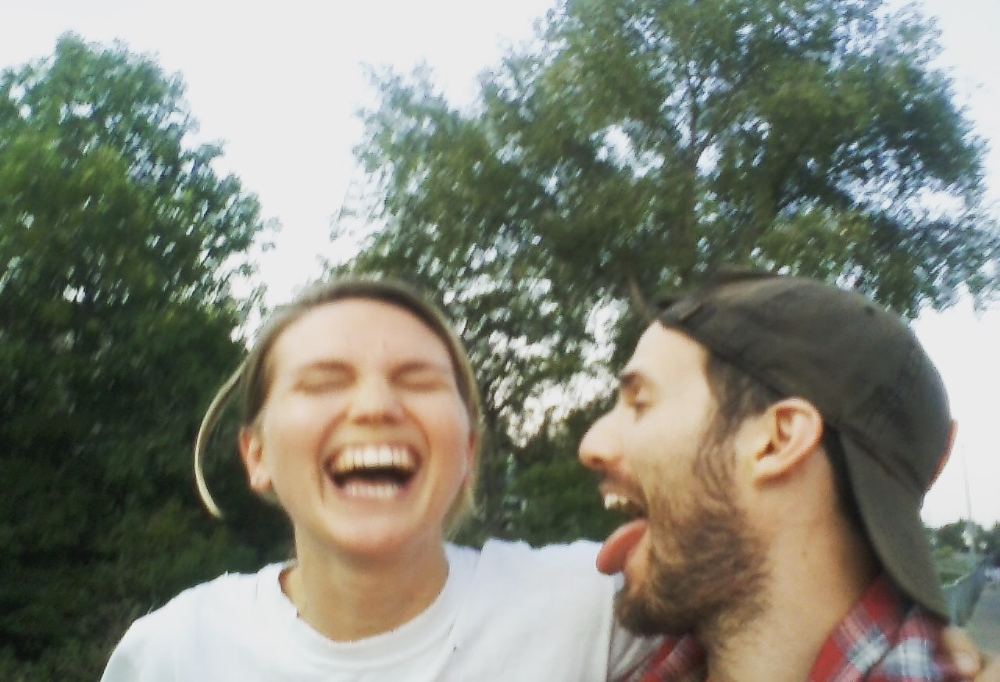
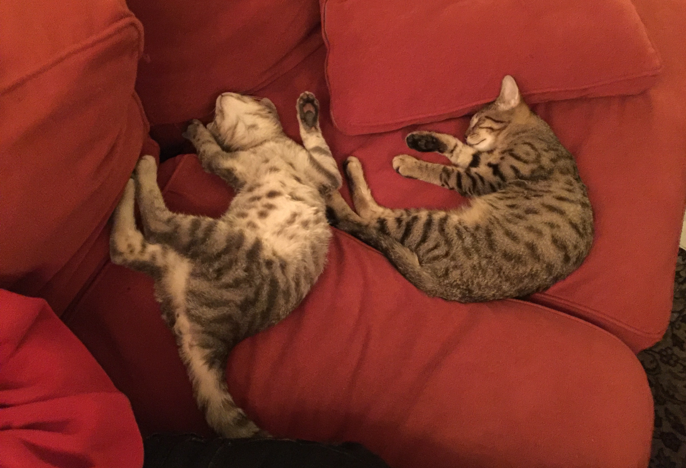
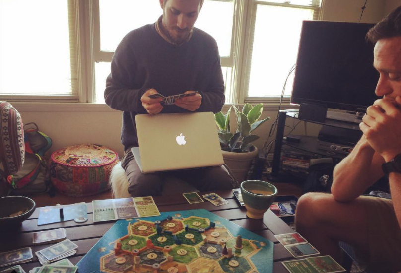
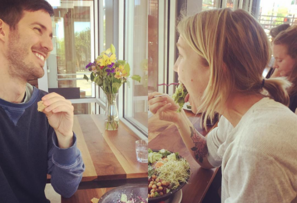

Hailing from the salt-mountained marshlands of Newark, California, I eventually skipped over to UC Berkeley to study abstract puzzle solving — or at least that was my experience majoring in Philosophy and Pure Mathematics. After graduating, I felt compelled to share all that is dope about math, so I pursued a Masters degree in Education and began teaching as a founding member of an experimental math-themed school in Brooklyn.
While teaching, I began learning C for fun and got hooked. I loved sponging up information as fast as I could and then using it for creative purposes, so I sought out a learning environment that cultivated these interests: 42 Silicon Valley. At 42 I focused on learning computer science fundamentals and algorithm design through building projects in C, Python, and Javascript.
42 is a non-profit, project-based computer science school focused on software fundamentals, collaboration, and technical rigor. It is 100% free, and there are no teachers, as learning is peer-to-peer. Students organize small groups for multi-week immersions in topics including the C language, Computer Graphics, Algorithm Design and Analysis, C++, Web Development, Operating Systems, and Machine Learning. These skills are then applied to projects that must be rigorously defended before moving on to new topics.
"My God is 42 impressive. This is not another programming bootcamp. It's another MIT."
"42 might be one of the most ambitious experiments in engineering education."
"The way that the students talk about learning there, you feel like its nothing that's ever been created before."
I'm a great big fan of the San Francisco Giants and the Golden State Warriors. I'm in the process of setting an unofficial sock-related world record. I owned the same Nokia brick cell phone from 2006 to 2016. I have two cats, Mooj and Chalupa Supreme. I don't know what's going on.